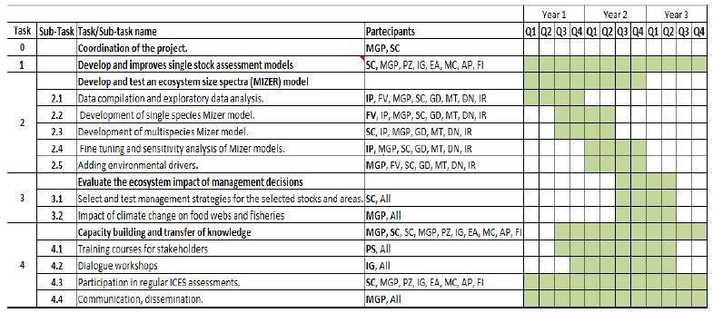

PROJECT TEAM COMPOSITION AND SCHEDULE
PROJECT TEAM COMPOSITION
The FRESCO team is built by fishery scientists, biologists and mathematicians with a broad experience in developing operational tools for fishery management. The FRESCO research team is composed by a core group of 7 researchers (first 7 listed below) and additional 6 in the working team:
Below are the photographs and contact information (email, social networks, etc.) and basic information about the role of each member separated by sections: RESEARCH TEAM and WORKING TEAM.
RESEARCH TEAM


 _1.jpeg)
I. González (IG)
Isabel.herraiz@ieo.csic.es-
(1) Dra. M.G. Pennino (MGP): the PI of the project, expert of ecological modelling with emphasis on spatial and stock assessment models. Stock coordinator of the common sole in the ICES areas 8c9a and member of the ICES Working Group for the Bay of Biscay and the Iberian Waters Ecoregion (WGBIE); she is the co-PI of the IMPRESS Spanish National Project. Affiliation: Instituto Español de Oceanografía (IEO-CSIC), Centro Oceanográfico de Madrid, C. del Corazón de María, 8, 28002 Madrid, Spain.
-
(2) Dr. S. Cerviño (SC): the PI of the project, expert on stock assessment methods from IEO-Vigo, chair of WGBIE, working group on charge of the assessment of the single stocks involved in this project; he is the co-PI of the IMPRESS Spanish National Project. Affiliation: Instituto Español de Oceanografía (IEO-CSIC), Centro Oceanográfico de Vigo, Subida a Radio Faro, 50-52. 36390 Vigo, Pontevedra, Spain.
-
(3) Dra. P. Sampedro (PS): is an expert on stock assessment models from IEO-Coruña, stock coordinator of anglerfishes in the ICES area 8c9a, member of the ICES WGBIE and STEFC. Affiliation: Instituto Español de Oceanografía (IEO, CSIC), Centro Oceanográfico de A Coruña, Paseo Marítimo Alcalde Francisco Vázquez 10, 15001 A Coruña, Spain.
-
(4) Dra. I. Preciado (IP): is an expert on marine trophic web indicators and ecological models, leader of the Descriptor 4 of Trophic Networks in the scope of the Marine Strategies Framework Directive (MSFD). Affiliation: Instituto Español de Oceanografía (IEO, CSIC), Centro Oceanográfico de Santander, Promontorio San Martín, s/n Aptdo. 240 39080 Santander, ES.
-
(5) E. Abad (EA): is an expert on stock assessment models from IEO-Vigo, stock coordinator of megrims stocks in the ICES area 8c9a, member of the ICES WGBIE. Affiliation: Instituto Español de Oceanografía (IEO-CSIC), Centro Oceanográfico de Vigo, Subida a Radio Faro, 50-52. 36390 Vigo, Pontevedra, Spain.
-
(6) Dr. F. Velasco (FV): is an expert in fishery management, chief of the fishery ICES department in the IEO and the Spanish representative in the ICES ACOM committee. Affiliation: Instituto Español de Oceanografía (IEO, CSIC), Centro Oceanográfico de Santander, Promontorio San Martín, s/n Aptdo. 240 39080 Santander, ES.
-
(7) Dra. I. Gonzalez Herraiz (IG): is an expert on stock assessment models from IEO-Coruña, stock coordinator of Nephrops FUs in the ICES area 8c, member of the ICES WGBIE. Affiliation: Instituto Español de Oceanografía (IEO, CSIC), Centro Oceanográfico de A Coruña, Paseo Marítimo Alcalde Francisco Vázquez 10, 15001 A Coruña, Spain.
WORKING TEAM
.jpg)
.jpg)
.JPG)
.jpg)
.png)
P. Verissimo (PV)
patricia.verisimo@ieo.csic.esI. Rabanal (IR)
irene.rabanal@ieo.csic.es-
(1) A. Paz (AP): is a PhD student supervised by SC, which is studying how climate change could affect stocks distribution and abundance in the Northeast Atlantic waters. Affiliation: Instituto Español de Oceanografía (IEO-CSIC), Centro Oceanográfico de Vigo, Subida a Radio Faro, 50-52. 36390 Vigo, Pontevedra, Spain.
-
(2) Dra. M. Cousido-Rocha (MC): is a mathematician, expert in several modeling approaches and in particular in stock assessment models. Affiliation: Instituto Español de Oceanografía (IEO-CSIC), Centro Oceanográfico de Vigo, Subida a Radio Faro, 50-52. 36390 Vigo, Pontevedra, Spain.
-
(3) Francisco Izquierdo (FI): is a FPI student supervised by both IPs of the FRESCO project, which is studying how spatial heterogeneity could affect stock assessment results. Affiliation: Instituto Español de Oceanografía (IEO-CSIC), Centro Oceanográfico de Vigo, Subida a Radio Faro, 50-52. 36390 Vigo, Pontevedra, Spain.
-
(4) Dr. David Nachón (DN): is an expert in fish biology and ecology and trophic interactions. Affiliation: Instituto Español de Oceanografía (IEO-CSIC), Centro Oceanográfico de Vigo, Subida a Radio Faro, 50-52. 36390 Vigo, Pontevedra, Spain.
-
(5) Dr. G. Delius (GD): is an applied mathematician at the University of York and the Mizer developer. Affiliation: University of York. Heslington, York YO10 5DD, Reino Unido.
-
(6) Dra. M. Torres (MT): is an expert in ecosystem models, ecological indicators and she works in Descriptor 4 of Trophic Networks in the scope of the MSFD. Affiliation: Instituto Español de Oceanografía (IEO, CSIC), Centro Oceanográfico de Cádiz, Puerto pesquero, Muelle de Levante s/n, Apdo. 2609, 11006 Cádiz, Spain.
Established scientific collaborations with national and internationally recognised researchers will be also fostered under FRESCO. We are aiming at developing analyses in collaboration with researchers at (1) ICM-CSIC (Spain) with Dra. Marta Coll, expert in ecosystem models; (2) ICES (Denmark) with Dr. Mark Dickey-Collas, Chair of the ICES advisory committee; (3) Institute of Marine Research (Norway) with Dr. Daniel Howell, expert in both ecosystem and stock assessment models and (4) Swedish University of Agricultural Sciences (Sweden) with Dr. Valerio Bartolino, chair of the Working Group on Multispecies Assessment Methods (WGSAM). All of them have participated in previous research activities and publications with members of FRESCO.
SCHEDULEThe workplan is presented in the precedent WORKPLAN section (figure 2) while the schedule of the project is presented in Table 1 in which we indicate the participants and leaders of each tasks and subtasks (Table 1).

Table 1. Schedule of FRESCO. We indicate participants and people responsible for each task (bold).